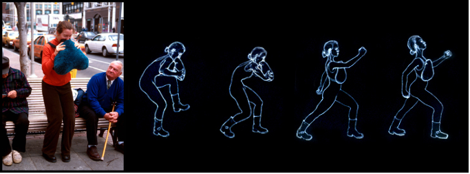

Why Learn Digital Fabrication?
Philosophy
The maker movement is a social movement with an artisan spirit. Maker culture emphasizes learning-through-doing (active learning) in a social environment. (Might not be a movement.)
- Encourage novel, cross-disciplinary applications of technologies. Personal fabrication drives innovation.
- Personal fabrication breaks the equality that jobs = work = money = consumption. Production and consumption can be more distributed.
- The killer app of digital fabrication is personal fabrication.
- Using the lab to make the lab: rapid prototyping of rapid prototyping.
- Open access: after the course, you're encouraged to continue using the space!
Types of making include amateur scientific equipment, biology food and composting, clothes, musical intruments, vehicles/robots and tool making.
Terminology
(We don't have strong feelings about these labels, but other folks might.)
- Makerspace: a community-operated, often non-profit workspace where people with common interests, such as computers, machining, technology, science, digital art, or electronic art, can meet, socialize and collaborate.
- Fab Lab: a small-scale workshop offering (personal) digital fabrication, organized by MIT's Center for Bits and Atoms
Other relevant concepts include Free and open-source software, Open design movement, Maker Faires, Makezine, Open source ecology,
Global Impact
- Fab City commitment to universal access to digital fabrication
- US Bill S. 2195: National Fab Lab Network Act of 2019
- Fab Academy
- In addition to the Fab Lab network, many other centers are pursuing similar goals around the world, including our neighbors Artisan's Asylum.
Related Courses
- PHYS S-12 Introduction to Digital Fabrication
- How To Make (Almost) Anything
- Machines That Make (Almost) Anything
- Fab Academy
Common Principles
- Community Learning.
- Personal Fabrication.
- Skill Integration.
- Documentation.
Course scope and expectations
- Many skill areas - broad and quick.
- We intend for this course to be accessible to beginners as well as worthwhile for more advanced makers.
- Each week is intended to let you get hands on and start an exploration.
- After each week, you will know how to do something safely and correctly, and will have documented it. You will also identify resources for going further. This will give you what you need to return and learn more deeply later.
- The final project is intended to show you how to integrate multiple capabilities. These topics add up in surprising ways. We will encourage you to build simple modular prototypes on the way to a final project. The result is not likely to be a finished product.
Example Final Projects
More examples in prior years of PHYS S-12, PHYSCI 70, and How to Make (Almost) Anything.

ScreamBody, Kelly Dobson 2004.
Press-Fit Go-Kart, Andrew Mao 2014.
Wall Plotter, Nathan Melenbrink 2014.

The portable electric handpsinning machine, Rob Hart 2013.
MOSS PAD, Jonathan Grinham 2013.
Skype-o-phone, Juliana Nazare 2017.
Overdrive, Julia Ebert 2017.
Projects (some ongoing) based on kit inventory for this class. Rob Hart, Spring 2020.
Projects with connections to our lab.
The Read Read - device to teach reading to the blind.
Moon, Dixon Magister Yang 2017.